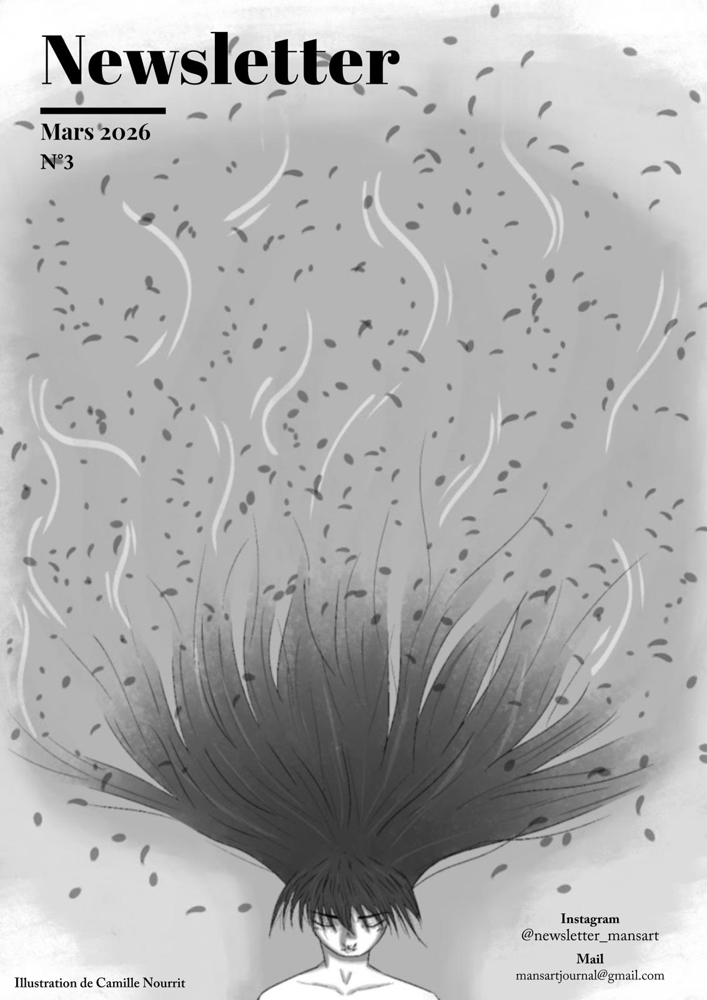

Printemps

Bonjours à toutes, cheres lecteur-rice-s !
On s'excuse de ne pas avoir pu publier plus tôt. Le journal était lui aussi en pleine épreuve : entre les bacs blancs, les montagnes de crêpes de la Chandeleur et notre ennemi national, Parcoursup, où le démon remplit de vice, il a fallu survivre. Mais nous voilà de retour, plus determiné-e-s que jamais À l'image de Alysa Liu, révélation éclatante des Jeux, nous comptons revenir plus fort-e-s, plus précis e-s et plus affûté-e-s dans nos pirouettes éditoriales. Ici, pas de dossiers façon Epstein files: seulement de la clarté, de l'analyse et un regard critique sur l'actualité.
Côté géopolitique, l'absurde n'est jamais bien loin. Donald Trump a de nouveau évoqué son intéret pour le Groenland, officiellement pour ses ressources stratégiques et sa position clé en Arctique. Il ne s'agissait absolument pas d'y construire un nouveau terrain de golf, loin de la, il veut seulement percer le secret ancestral de leur recette de glace aussi rare que les cités d'or. Pendant que certaine-s rejouent au Monopoly grandeur nature, la banquise, elle, continue de fondre, et ce n'est malheureusement pas une métaphore.
Pour ce printemps, nous vous préparons de nombreuses nouveautés: davantage d'articles. de review et l'arrivée du blog. OMG! À la fin du journal, un QR code vous attend: scannez-le et vous serez directement redirigé-e-s vers ce nouvel espace.
Le CVL vous prépare également plusieurs journées à thème culture, Journée internationale des droits des femmes, et bien d'autres encore. Nous espérons votre mobilisation.
À bientôt
-L'équipe de rédaction